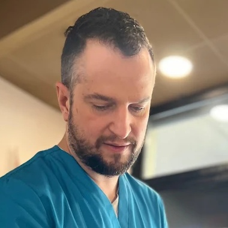
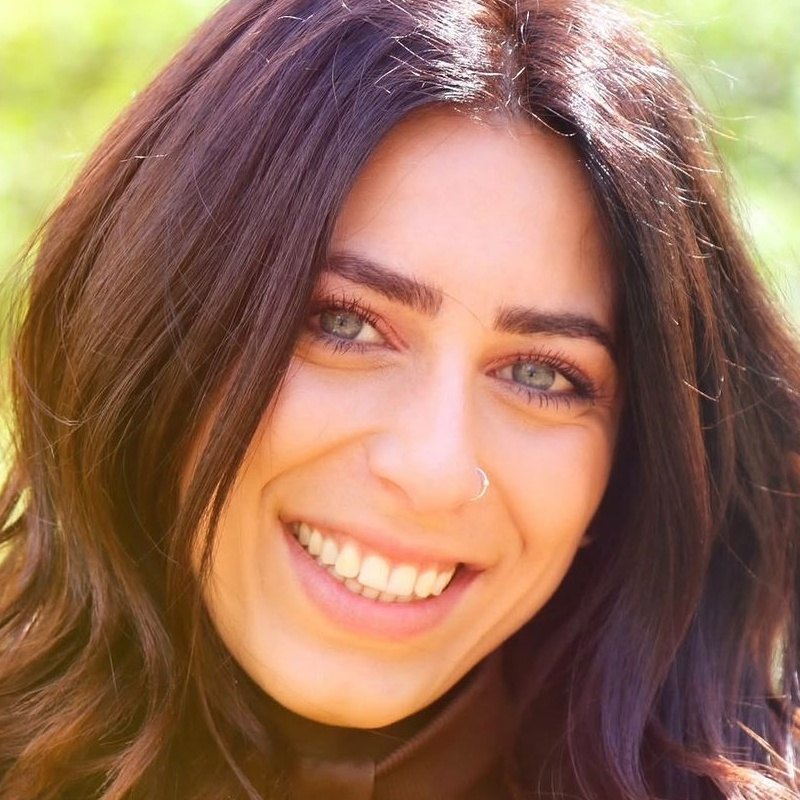
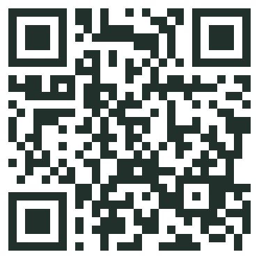

Kinesiologia Studio · Modena
Postura Experience Lab
Una giornata intera per capire perché il tuo corpo fa male e cosa fare, da solo, per rimetterlo a posto.
Una giornata intera · 8 ore
49 €
Solo 20 posti
Pratica in coppia e da soli
Modena
I quattro pilastri
AnatomiaTocchi e riconosci su di te muscoli, ossa e articolazioni.
BiomeccanicaPerché il dolore sta in un posto e la causa in un altro.
PosturaIl tuo profilo posturale, fotografato e spiegato.
TrainingMobilità, stretching e forza: la routine da 15 minuti per casa.
Cosa faremo
- MattinaIl tuo profilo con Che Posturatest rapido all'arrivo, ognuno esce con il suo
- Piede e ginocchioautomassaggio e mobilità
- La schienamassaggio in coppia, guidato passo passo
- PomeriggioCervicale e spalleautomassaggio, in coppia e respirazione
- Mobilità, stretching, forzala routine su misura del tuo profilo
- Il tuo problematavoli per lombare, cervicale, ginocchio, piede

Dfoto di Davide
Dott. Davide Scuderi
Trattamento
Massoterapista e chinesiologo. Anatomia, biomeccanica e massaggio: libera catene muscolari e fasce, riequilibra il bacino, scarica collo e spalle.

Mfoto di Morena
Dott.ssa Morena Anastasi
Movimento
Valutazione posturale e lavoro sul movimento: insegna al corpo a tenere da solo la postura corretta e la rende stabile nel tempo.
Torni a casa con
Il tuo profilo posturalefotografato, misurato, spiegato
La routine da 15 minutimobilità, stretching e forza su misura
3 cose da fare subitoper il tuo problema, scritte da noi
Sabato [data] · 9:30 – 18:30
Modena · pranzo leggero incluso · abbigliamento comodo
WDavide 348 151 4382 · WhatsApp
WMorena 371 368 2776 · WhatsApp
kinesiologiastudio.it · davidemcb.github.io/che-postura

Che Postura
Inquadra il codice: scopri chi siamo e come lavoriamo in équipe.